CODING AGENTS AS PIXEL WORLD MODELS
traex/DeepSeek-V4.1-Flash · mechanics_0012
点击播放 · 原生 RGB 像素
逐轮保存的候选
回放视频、检查图与代码变化。
每份候选均可单独播放。实际图片检查记录在下方工具轨迹中。
候选 01播放与检查图
点击播放 · 原生 RGB 像素

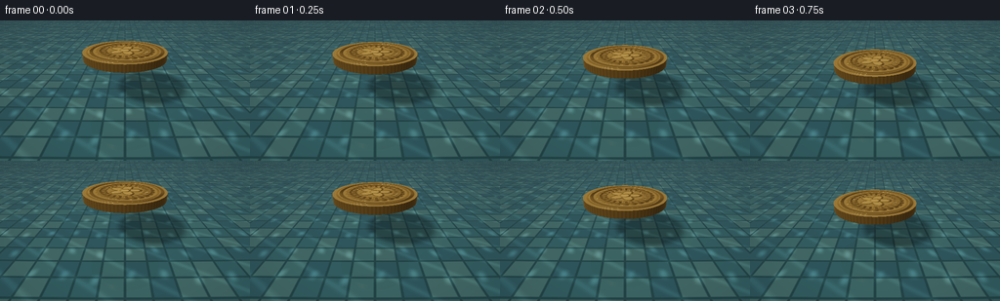
展开代码变化
--- 上一保存版本
+++ 本次保存版本
@@ -0,0 +1,402 @@
+from pathlib import Path
+
+import numpy as np
+from PIL import Image
+
+import artifact_io
+
+
+WIDTH = 256
+HEIGHT = 144
+FRAMES = 20
+FPS = 4.0
+SUPERSAMPLE = 2
+
+COIN_RADIUS = 12.4
+COIN_HALF_THICKNESS = 1.05
+COIN_Z = 6.0
+WATER_Y = 0.0
+FLOOR_Y = -4.4
+
+
+def normalize(vector, axis=-1):
+ norm = np.linalg.norm(vector, axis=axis, keepdims=True)
+ return vector / np.maximum(norm, 1e-8)
+
+
+def smoothstep(edge0, edge1, value):
+ x = np.clip((value - edge0) / (edge1 - edge0), 0.0, 1.0)
+ return x * x * (3.0 - 2.0 * x)
+
+
+def make_camera():
+ eye = np.array([0.0, 28.0, -44.0], dtype=np.float64)
+ target = np.array([0.0, 0.55, COIN_Z], dtype=np.float64)
+ forward = normalize(target - eye)
+ right = np.array([1.0, 0.0, 0.0], dtype=np.float64)
+ up = normalize(np.cross(forward, right))
+ return eye, forward, right, up
+
+
+def make_rays(width, height):
+ eye, forward, right, up = make_camera()
+ tan_half_fov = np.tan(np.deg2rad(22.5))
+ aspect = width / height
+ px = (np.arange(width, dtype=np.float64) + 0.5) / width * 2.0 - 1.0
+ py = 1.0 - (np.arange(height, dtype=np.float64) + 0.5) / height * 2.0
+ x = px[None, :] * aspect * tan_half_fov
+ y = py[:, None] * tan_half_fov
+ directions = (
+ forward[None, None, :]
+ + x[:, :, None] * right[None, None, :]
+ + y[:, :, None] * up[None, None, :]
+ )
+ return eye, normalize(directions)
+
+
+def ray_plane(origin, directions, plane_y):
+ safe_dy = np.where(np.abs(directions[..., 1]) < 1e-6, 1e-6, directions[..., 1])
+ t = (plane_y - origin[1]) / safe_dy
+ t = np.where(t > 1e-5, t, np.inf)
+ points = origin[None, None, :] + directions * t[..., None]
+ return t, points
+
+
+def coin_position(frame):
+ contact_frame = 9.0
+ if frame <= contact_frame:
+ u = frame / contact_frame
+ ease = u * u * (3.0 - 2.0 * u)
+ return 13.25 + (1.24 - 13.25) * ease
+ settle = smoothstep(contact_frame, FRAMES - 1, frame)
+ wobble = 0.055 * np.sin((frame - contact_frame) * 1.15)
+ return 1.24 - 0.25 * settle + wobble * (1.0 - settle)
+
+
+def intersect_coin(origin, directions, center_y):
+ origin = np.asarray(origin)
+ ox = origin[..., 0]
+ oy = origin[..., 1] - center_y
+ oz = origin[..., 2] - COIN_Z
+ dx = directions[..., 0]
+ dy = directions[..., 1]
+ dz = directions[..., 2]
+
+ a = dx * dx + dz * dz
+ b = 2.0 * (ox * dx + oz * dz)
+ c = ox * ox + oz * oz - COIN_RADIUS * COIN_RADIUS
+ discriminant = b * b - 4.0 * a * c
+ root = np.sqrt(np.maximum(discriminant, 0.0))
+ inv_denom = 1.0 / np.maximum(2.0 * a, 1e-9)
+
+ t = np.full_like(dx, np.inf)
+ normal = np.zeros_like(directions)
+ kind = np.zeros_like(dx, dtype=np.int8)
+
+ for side_t in ((-b - root) * inv_denom, (-b + root) * inv_denom):
+ pz = oz + side_t * dz
+ py = oy + side_t * dy
+ valid = (
+ (discriminant >= 0.0)
+ & (side_t > 1e-5)
+ & (py >= -COIN_HALF_THICKNESS)
+ & (py <= COIN_HALF_THICKNESS)
+ & (side_t < t)
+ )
+ if np.any(valid):
+ px = ox + side_t * dx
+ n = normalize(np.stack([px, np.zeros_like(px), pz], axis=-1))
+ t = np.where(valid, side_t, t)
+ normal = np.where(valid[..., None], n, normal)
+ kind = np.where(valid, 2, kind)
+
+ safe_dy = np.where(np.abs(dy) < 1e-7, 1e-7, dy)
+ for cap_y, cap_kind in (
+ (COIN_HALF_THICKNESS, 0),
+ (-COIN_HALF_THICKNESS, 1),
+ ):
+ cap_t = (cap_y - oy) / safe_dy
+ px = ox + cap_t * dx
+ pz = oz + cap_t * dz
+ valid = (
+ (cap_t > 1e-5)
+ & (cap_t < t)
+ & (px * px + pz * pz <= COIN_RADIUS * COIN_RADIUS)
+ )
+ n = np.zeros_like(directions)
+ n[..., 1] = 1.0 if cap_kind == 0 else -1.0
+ t = np.where(valid, cap_t, t)
+ normal = np.where(valid[..., None], n, normal)
+ kind = np.where(valid, cap_kind, kind)
+
+ hit = np.isfinite(t)
+ points = origin + directions * np.where(hit, t, 0.0)[..., None]
+ return hit, t, points, normal, kind
+
+
+def coin_height(u, v):
+ rho = np.sqrt(u * u + v * v)
+ theta = np.arctan2(v, u)
+ outer_rim = np.exp(-((rho - 0.845) / 0.035) ** 2)
+ inner_ring = np.exp(-((rho - 0.615) / 0.025) ** 2)
+ star_radius = 0.17 + 0.22 * np.abs(np.cos(2.5 * theta))
+ star = smoothstep(0.025, -0.025, rho - star_radius)
+ center = smoothstep(0.14, 0.10, rho)
+ ray_window = smoothstep(0.43, 0.48, rho) * smoothstep(0.71, 0.66, rho)
+ rays = ray_window * (0.5 + 0.5 * np.cos(24.0 * theta)) * 0.16
+ return 0.95 * outer_rim + 0.42 * inner_ring + 0.62 * star + 0.22 * center + rays
+
+
+def shade_coin(points, normals, kinds, directions, center_y, frame):
+ p = points
+ n = normals.copy()
+ dx = p[..., 0] / COIN_RADIUS
+ dz = (p[..., 2] - COIN_Z) / COIN_RADIUS
+ top = kinds == 0
+
+ if np.any(top):
+ eps = 0.013
+ h = coin_height(dx, dz)
+ dhdx = (coin_height(dx + eps, dz) - coin_height(dx - eps, dz)) / (2.0 * eps)
+ dhdz = (coin_height(dx, dz + eps) - coin_height(dx, dz - eps)) / (2.0 * eps)
+ relief_normal = normalize(
+ np.stack([-1.05 * dhdx, np.ones_like(dhdx), -1.05 * dhdz], axis=-1)
+ )
+ n = np.where(top[..., None], relief_normal, n)
+ else:
+ h = np.zeros_like(dx)
+
+ view = -directions
+ light = normalize(np.array([-0.48, 0.82, -0.42]))
+ halfway = normalize(light[None, None, :] + view)
+ diffuse = np.clip(np.sum(n * light, axis=-1), 0.0, 1.0)
+ ndotv = np.clip(np.sum(n * view, axis=-1), 0.0, 1.0)
+ ndoth = np.clip(np.sum(n * halfway, axis=-1), 0.0, 1.0)
+
+ gold = np.array([0.93, 0.61, 0.20])
+ warm_highlight = np.array([1.0, 0.83, 0.49])
+ side = kinds == 2
+ theta = np.arctan2(p[..., 2] - COIN_Z, p[..., 0])
+ reeding = 0.92 + 0.08 * np.sin(82.0 * theta)
+ albedo = np.broadcast_to(gold, p.shape).copy()
+ albedo *= (0.46 + 0.54 * diffuse[..., None])
+ albedo *= np.where(side[..., None], 0.67 * reeding[..., None], 1.0)
+ albedo *= np.where(top[..., None], (0.86 + 0.30 * h)[..., None], 1.0)
+
+ specular = (
+ 1.28 * ndoth**115
+ + 0.24 * ndoth**18
+ + 0.10 * np.maximum(n[..., 1], 0.0) ** 7
+ )
+ fresnel = 0.035 + 0.965 * (1.0 - ndotv) ** 5
+ environment = (
+ 0.26
+ + 0.32 * np.maximum(n[..., 1], 0.0)
+ + 0.12 * np.maximum(-n[..., 0], 0.0)
+ )
+ color = (
+ albedo * (0.56 + 0.54 * environment[..., None])
+ + warm_highlight[None, None, :] * specular[..., None]
+ + gold[None, None, :] * (0.20 * fresnel[..., None])
+ )
+
+ # The stamped devices catch a warmer edge than the flat field.
+ color += np.where(
+ top[..., None], (0.13 * h * diffuse)[..., None] * warm_highlight, 0.0
+ )
+
+ depth = np.maximum(-p[..., 1], 0.0)
+ underwater = smoothstep(0.0, 0.8, depth)
+ water_tint = np.array([0.19, 0.43, 0.43])
+ color = color * (1.0 - 0.34 * underwater[..., None])
+ color += water_tint * (0.12 * underwater[..., None])
+ return np.clip(color, 0.0, 3.0)
+
+
+def ripple_height(x, z, time_value):
+ contact_time = 9.0 / FPS
+ tau = time_value - contact_time
+ if tau <= 0.0:
+ return np.zeros_like(x)
+ radius = np.sqrt(x * x + (z - COIN_Z) ** 2)
+ front = 8.0 * tau + 0.8
+ active = smoothstep(front + 1.2, front - 1.8, radius)
+ envelope = np.exp(-radius / 24.0) * np.exp(-tau / 7.5) * active
+ primary = np.sin(2.0 * np.pi * (radius / 4.15 - 0.68 * tau))
+ secondary = np.sin(2.0 * np.pi * (radius / 7.2 - 0.43 * tau + 0.18))
+ center_cap = smoothstep(COIN_RADIUS + 5.0, COIN_RADIUS - 2.0, radius)
+ return 0.105 * envelope * (primary + 0.42 * secondary + 0.35 * center_cap)
+
+
+def water_normal(points, time_value):
+ x = points[..., 0]
+ z = points[..., 2]
+ eps = 0.16
+ dhdx = (
+ ripple_height(x + eps, z, time_value)
+ - ripple_height(x - eps, z, time_value)
+ ) / (2.0 * eps)
+ dhdz = (
+ ripple_height(x, z + eps, time_value)
+ - ripple_height(x, z - eps, time_value)
+ ) / (2.0 * eps)
+ return normalize(np.stack([-dhdx, np.ones_like(dhdx), -dhdz], axis=-1))
+
+
+def refract_down(directions, normals):
+ eta = 1.0 / 1.333
+ cos_i = np.clip(-np.sum(directions * normals, axis=-1), 0.0, 1.0)
+ sin2_t = eta * eta * (1.0 - cos_i * cos_i)
+ cos_t = np.sqrt(np.maximum(1.0 - sin2_t, 0.0))
+ return normalize(
+ eta * directions + (eta * cos_i - cos_t)[..., None] * normals
+ )
+
+
+def pool_floor(point, time_value, coin_y):
+ x = point[..., 0]
+ z = point[..., 2]
+ tile_size = 6.2
+ tx = x / tile_size
+ tz = z / tile_size
+ ix = np.floor(tx)
+ iz = np.floor(tz)
+ fx = tx - ix
+ fz = tz - iz
+ edge = np.minimum(np.minimum(fx, 1.0 - fx), np.minimum(fz, 1.0 - fz))
+ grout = 1.0 - smoothstep(0.025, 0.075, edge)
+ hash_value = np.mod(ix * 7.0 + iz * 13.0 + np.mod(ix * iz, 5.0), 4.0)
+ palette = np.array(
+ [
+ [0.24, 0.52, 0.55],
+ [0.31, 0.60, 0.59],
+ [0.21, 0.46, 0.51],
+ [0.35, 0.62, 0.59],
+ ]
+ )
+ color = palette[np.clip(hash_value.astype(int), 0, 3)]
+ grout_color = np.array([0.14, 0.32, 0.34])
+ color = color * (1.0 - grout[..., None]) + grout_color * grout[..., None]
+
+ phase = time_value * 0.42
+ w1 = np.sin(0.74 * x + 0.91 * np.sin(0.19 * z + phase) + 1.2 + phase)
+ w2 = np.sin(0.61 * z - 0.72 * np.sin(0.23 * x - phase * 0.6) + 2.7)
+ caustic = np.maximum(w1, 0.0) ** 3 * np.maximum(w2, 0.0) ** 2
+ caustic += 0.35 * np.maximum(np.sin(0.36 * x + 0.51 * z + phase * 1.3), 0.0) ** 8
+ color *= (0.82 + 0.62 * caustic[..., None])
+
+ light = normalize(np.array([-0.48, 0.82, -0.42]))
+ to_coin_y = (coin_y - FLOOR_Y) / light[1]
+ shadow_x = x + to_coin_y * light[0]
+ shadow_z = z + to_coin_y * light[2]
+ shadow_radius = np.sqrt(shadow_x * shadow_x + (shadow_z - COIN_Z) ** 2)
+ shadow = smoothstep(COIN_RADIUS + 2.2, COIN_RADIUS - 1.5, shadow_radius)
+ color *= (1.0 - 0.48 * shadow[..., None])
+ return color
+
+
+def environment_color(direction):
+ up = np.clip(direction[..., 1], 0.0, 1.0)
+ sky_top = np.array([0.55, 0.67, 0.70])
+ sky_horizon = np.array([0.10, 0.22, 0.25])
+ color = sky_horizon + (sky_top - sky_horizon) * up[..., None] ** 0.72
+ light = normalize(np.array([-0.48, 0.82, -0.42]))
+ glow = np.clip(np.sum(direction * light, axis=-1), 0.0, 1.0) ** 42
+ color += glow[..., None] * np.array([0.72, 0.62, 0.40])
+ return color
+
+
+def render_frame(frame):
+ width = WIDTH * SUPERSAMPLE
+ height = HEIGHT * SUPERSAMPLE
+ eye, directions = make_rays(width, height)
+ time_value = frame / FPS
+ center_y = coin_position(frame)
+
+ water_t, water_points = ray_plane(eye, directions, WATER_Y)
+ normals = water_normal(water_points, time_value)
+ refracted = refract_down(directions, normals)
+ safe_refracted_y = np.minimum(refracted[..., 1], -1e-4)
+ floor_distance = (FLOOR_Y - water_points[..., 1]) / safe_refracted_y
+ floor_points = water_points + refracted * floor_distance[..., None]
+ floor_color = pool_floor(floor_points, time_value, center_y)
+
+ # Clear shallow water preserves the mosaic while adding depth and absorption.
+ depth = np.maximum(WATER_Y - FLOOR_Y, 0.0)
+ absorption = np.exp(-0.075 * depth)
+ water_tint = np.array([0.10, 0.27, 0.28])
+ transmitted = floor_color * absorption + water_tint * (1.0 - absorption) * 0.55
+
+ reflected = directions - 2.0 * np.sum(directions * normals, axis=-1)[..., None] * normals
+ reflected = normalize(reflected)
+ reflection = environment_color(reflected)
+
+ reflection_hit, _, reflection_points, reflection_normals, reflection_kinds = intersect_coin(
+ water_points + normals * 0.025, reflected, center_y
+ )
+ reflected_coin = shade_coin(
+ reflection_points, reflection_normals, reflection_kinds, reflected, center_y, frame
+ )
+ reflection = np.where(
+ reflection_hit[..., None], reflection * 0.30 + reflected_coin * 0.70, reflection
+ )
+
+ light = normalize(np.array([-0.48, 0.82, -0.42]))
+ halfway = normalize(light[None, None, :] - directions)
+ ndoth = np.clip(np.sum(normals * halfway, axis=-1), 0.0, 1.0)
+ water_glint = 1.55 * ndoth**360 + 0.12 * ndoth**48
+ fresnel = 0.025 + 0.975 * (1.0 - np.clip(-np.sum(directions * normals, axis=-1), 0.0, 1.0)) ** 5
+ water_color = transmitted * (1.0 - fresnel[..., None]) + reflection * fresnel[..., None]
+ water_color += np.array([0.90, 0.94, 0.82]) * water_glint[..., None]
+
+ coin_hit, coin_t, coin_points, coin_normals, coin_kinds = intersect_coin(
+ eye, directions, center_y
+ )
+ coin_color = shade_coin(coin_points, coin_normals, coin_kinds, directions, center_y, frame)
+ above_water = coin_points[..., 1] >= -0.05
+ in_front_of_water = coin_t <= water_t + 0.15
+ visible_coin = coin_hit & (above_water | in_front_of_water)
+ submerged = coin_hit & ~above_water
+
+ color = np.where(visible_coin[..., None], coin_color, water_color)
+ if np.any(submerged):
+ submerged_alpha = 0.80 * np.exp(-np.maximum(-coin_points[..., 1], 0.0) / 2.3)
+ color = np.where(
+ submerged[..., None],
+ water_color * (1.0 - submerged_alpha[..., None])
+ + coin_color * submerged_alpha[..., None],
+ color,
+ )
+
+ # Sparse surface sparkle anchors the water plane without turning it into glass.
+ fine = (
+ np.sin(41.0 * water_points[..., 0] + 17.0 * water_points[..., 2] + frame * 0.8)
+ * np.sin(31.0 * water_points[..., 2] - 13.0 * water_points[..., 0] - frame * 0.6)
+ )
+ color += np.array([0.16, 0.19, 0.15]) * np.maximum(fine - 0.965, 0.0)[..., None] * 4.0
+
+ # Gentle optical falloff and a fine, neutral vignette keep attention on the coin.
+ xx = np.linspace(-1.0, 1.0, width)[None, :]
+ yy = np.linspace(-1.0, 1.0, height)[:, None]
+ vignette = 1.0 - 0.13 * (0.62 * xx * xx + 0.38 * yy * yy)
+ color *= vignette[..., None]
+ color = 1.0 - np.exp(-1.14 * np.maximum(color, 0.0))
+ color = np.power(np.clip(color, 0.0, 1.0), 0.92)
+
+ image = Image.fromarray((color * 255.0 + 0.5).astype(np.uint8), mode="RGB")
+ image = image.resize((WIDTH, HEIGHT), Image.Resampling.LANCZOS)
+ return np.asarray(image, dtype=np.uint8)
+
+
+def main():
+ case_dir = Path(__file__).resolve().parent
+ frames = np.empty((FRAMES, HEIGHT, WIDTH, 3), dtype=np.uint8)
+ for frame in range(FRAMES):
+ frames[frame] = render_frame(frame)
+ print(f"rendered frame {frame + 1:02d}/{FRAMES}", flush=True)
+ artifact_io.save(frames, case_dir)
+ print("saved frames, pixels.npz, inspection.png, and index.html")
+
+
+if __name__ == "__main__":
+ main()
候选 02播放与检查图
点击播放 · 原生 RGB 像素
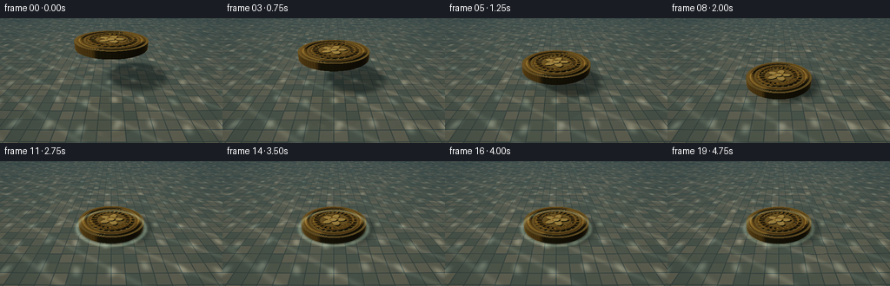
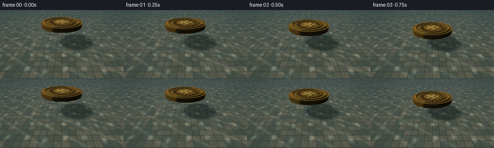
展开代码变化
--- 上一保存版本
+++ 本次保存版本
@@ -12,11 +12,11 @@
FPS = 4.0
SUPERSAMPLE = 2
-COIN_RADIUS = 12.4
-COIN_HALF_THICKNESS = 1.05
-COIN_Z = 6.0
+COIN_RADIUS = 10.4
+COIN_HALF_THICKNESS = 1.0
+COIN_Z = 5.2
WATER_Y = 0.0
-FLOOR_Y = -4.4
+FLOOR_Y = -3.7
def normalize(vector, axis=-1):
@@ -30,8 +30,8 @@
def make_camera():
- eye = np.array([0.0, 28.0, -44.0], dtype=np.float64)
- target = np.array([0.0, 0.55, COIN_Z], dtype=np.float64)
+ eye = np.array([0.0, 27.0, -41.0], dtype=np.float64)
+ target = np.array([0.0, 0.35, COIN_Z + 0.4], dtype=np.float64)
forward = normalize(target - eye)
right = np.array([1.0, 0.0, 0.0], dtype=np.float64)
up = normalize(np.cross(forward, right))
@@ -40,7 +40,7 @@
def make_rays(width, height):
eye, forward, right, up = make_camera()
- tan_half_fov = np.tan(np.deg2rad(22.5))
+ tan_half_fov = np.tan(np.deg2rad(21.0))
aspect = width / height
px = (np.arange(width, dtype=np.float64) + 0.5) / width * 2.0 - 1.0
py = 1.0 - (np.arange(height, dtype=np.float64) + 0.5) / height * 2.0
@@ -160,50 +160,76 @@
dhdx = (coin_height(dx + eps, dz) - coin_height(dx - eps, dz)) / (2.0 * eps)
dhdz = (coin_height(dx, dz + eps) - coin_height(dx, dz - eps)) / (2.0 * eps)
relief_normal = normalize(
- np.stack([-1.05 * dhdx, np.ones_like(dhdx), -1.05 * dhdz], axis=-1)
+ np.stack([-1.65 * dhdx, np.ones_like(dhdx), -1.65 * dhdz], axis=-1)
)
n = np.where(top[..., None], relief_normal, n)
else:
h = np.zeros_like(dx)
view = -directions
- light = normalize(np.array([-0.48, 0.82, -0.42]))
- halfway = normalize(light[None, None, :] + view)
- diffuse = np.clip(np.sum(n * light, axis=-1), 0.0, 1.0)
+ key = normalize(np.array([-0.48, 0.82, -0.42]))
+ fill = normalize(np.array([0.72, 0.34, 0.55]))
+ rim = normalize(np.array([-0.78, 0.24, 0.62]))
+ halfway = normalize(key[None, None, :] + view)
+ diffuse = np.clip(np.sum(n * key, axis=-1), 0.0, 1.0)
+ fill_diffuse = np.clip(np.sum(n * fill, axis=-1), 0.0, 1.0)
+ rim_diffuse = np.clip(np.sum(n * rim, axis=-1), 0.0, 1.0)
ndotv = np.clip(np.sum(n * view, axis=-1), 0.0, 1.0)
ndoth = np.clip(np.sum(n * halfway, axis=-1), 0.0, 1.0)
- gold = np.array([0.93, 0.61, 0.20])
- warm_highlight = np.array([1.0, 0.83, 0.49])
+ gold = np.array([0.79, 0.52, 0.16])
+ warm_highlight = np.array([1.0, 0.86, 0.58])
side = kinds == 2
theta = np.arctan2(p[..., 2] - COIN_Z, p[..., 0])
reeding = 0.92 + 0.08 * np.sin(82.0 * theta)
albedo = np.broadcast_to(gold, p.shape).copy()
- albedo *= (0.46 + 0.54 * diffuse[..., None])
+ albedo *= (
+ 0.31
+ + 0.57 * diffuse[..., None]
+ + 0.17 * fill_diffuse[..., None]
+ + 0.10 * rim_diffuse[..., None]
+ )
albedo *= np.where(side[..., None], 0.67 * reeding[..., None], 1.0)
albedo *= np.where(top[..., None], (0.86 + 0.30 * h)[..., None], 1.0)
+ fill_half = normalize(fill[None, None, :] + view)
+ rim_half = normalize(rim[None, None, :] + view)
+ key_spec = ndoth**135
+ fill_spec = np.clip(np.sum(n * fill_half, axis=-1), 0.0, 1.0) ** 48
+ rim_spec = np.clip(np.sum(n * rim_half, axis=-1), 0.0, 1.0) ** 72
specular = (
- 1.28 * ndoth**115
- + 0.24 * ndoth**18
+ 1.72 * key_spec
+ + 0.26 * ndoth**22
+ + 0.36 * fill_spec
+ + 0.48 * rim_spec
+ 0.10 * np.maximum(n[..., 1], 0.0) ** 7
)
fresnel = 0.035 + 0.965 * (1.0 - ndotv) ** 5
+ reflected = directions - 2.0 * np.sum(directions * n, axis=-1)[..., None] * n
+ reflected = normalize(reflected)
+ sky = np.clip(reflected[..., 1], 0.0, 1.0)
+ studio_band = smoothstep(
+ 0.02, 0.34, reflected[..., 0] * -0.72 + reflected[..., 2] * 0.58
+ ) * smoothstep(0.90, 0.24, reflected[..., 1])
environment = (
- 0.26
- + 0.32 * np.maximum(n[..., 1], 0.0)
- + 0.12 * np.maximum(-n[..., 0], 0.0)
+ np.array([0.17, 0.22, 0.23])
+ + np.array([0.26, 0.31, 0.31]) * sky[..., None] ** 0.65
+ + np.array([0.53, 0.50, 0.38]) * studio_band[..., None]
+ + np.array([0.16, 0.10, 0.025]) * rim_diffuse[..., None]
)
color = (
- albedo * (0.56 + 0.54 * environment[..., None])
+ albedo * environment
+ warm_highlight[None, None, :] * specular[..., None]
- + gold[None, None, :] * (0.20 * fresnel[..., None])
+ + gold[None, None, :] * (0.27 * fresnel[..., None])
)
# The stamped devices catch a warmer edge than the flat field.
- color += np.where(
- top[..., None], (0.13 * h * diffuse)[..., None] * warm_highlight, 0.0
- )
+ color += np.where(top[..., None], (0.18 * h * diffuse)[..., None] * warm_highlight, 0.0)
+ recess = np.where(top[..., None], (0.73 + 0.27 * smoothstep(0.0, 0.5, h))[..., None], 1.0)
+ color *= recess
+
+ waterline = np.exp(-(p[..., 1] / 0.11) ** 2)
+ color += np.where(side[..., None], waterline[..., None] * np.array([0.36, 0.48, 0.40]), 0.0)
depth = np.maximum(-p[..., 1], 0.0)
underwater = smoothstep(0.0, 0.8, depth)
@@ -220,12 +246,17 @@
return np.zeros_like(x)
radius = np.sqrt(x * x + (z - COIN_Z) ** 2)
front = 8.0 * tau + 0.8
- active = smoothstep(front + 1.2, front - 1.8, radius)
- envelope = np.exp(-radius / 24.0) * np.exp(-tau / 7.5) * active
+ active = smoothstep(front + 1.4, front - 1.7, radius)
+ envelope = np.exp(-radius / 26.0) * np.exp(-tau / 8.5) * active
primary = np.sin(2.0 * np.pi * (radius / 4.15 - 0.68 * tau))
secondary = np.sin(2.0 * np.pi * (radius / 7.2 - 0.43 * tau + 0.18))
center_cap = smoothstep(COIN_RADIUS + 5.0, COIN_RADIUS - 2.0, radius)
- return 0.105 * envelope * (primary + 0.42 * secondary + 0.35 * center_cap)
+ meniscus = 0.12 * np.exp(-tau / 2.8) * smoothstep(0.0, 0.3, tau)
+ meniscus *= np.exp(-((radius - COIN_RADIUS - 0.55) / 0.72) ** 2)
+ return (
+ 0.125 * envelope * (primary + 0.42 * secondary + 0.35 * center_cap)
+ + meniscus
+ )
def water_normal(points, time_value):
@@ -256,7 +287,7 @@
def pool_floor(point, time_value, coin_y):
x = point[..., 0]
z = point[..., 2]
- tile_size = 6.2
+ tile_size = 3.35
tx = x / tile_size
tz = z / tile_size
ix = np.floor(tx)
@@ -264,18 +295,18 @@
fx = tx - ix
fz = tz - iz
edge = np.minimum(np.minimum(fx, 1.0 - fx), np.minimum(fz, 1.0 - fz))
- grout = 1.0 - smoothstep(0.025, 0.075, edge)
+ grout = 1.0 - smoothstep(0.018, 0.052, edge)
hash_value = np.mod(ix * 7.0 + iz * 13.0 + np.mod(ix * iz, 5.0), 4.0)
palette = np.array(
[
- [0.24, 0.52, 0.55],
- [0.31, 0.60, 0.59],
- [0.21, 0.46, 0.51],
- [0.35, 0.62, 0.59],
+ [0.50, 0.49, 0.38],
+ [0.43, 0.45, 0.35],
+ [0.38, 0.42, 0.34],
+ [0.56, 0.53, 0.40],
]
)
color = palette[np.clip(hash_value.astype(int), 0, 3)]
- grout_color = np.array([0.14, 0.32, 0.34])
+ grout_color = np.array([0.25, 0.30, 0.27])
color = color * (1.0 - grout[..., None]) + grout_color * grout[..., None]
phase = time_value * 0.42
@@ -283,7 +314,7 @@
w2 = np.sin(0.61 * z - 0.72 * np.sin(0.23 * x - phase * 0.6) + 2.7)
caustic = np.maximum(w1, 0.0) ** 3 * np.maximum(w2, 0.0) ** 2
caustic += 0.35 * np.maximum(np.sin(0.36 * x + 0.51 * z + phase * 1.3), 0.0) ** 8
- color *= (0.82 + 0.62 * caustic[..., None])
+ color *= (0.83 + 0.72 * caustic[..., None])
light = normalize(np.array([-0.48, 0.82, -0.42]))
to_coin_y = (coin_y - FLOOR_Y) / light[1]
@@ -291,14 +322,14 @@
shadow_z = z + to_coin_y * light[2]
shadow_radius = np.sqrt(shadow_x * shadow_x + (shadow_z - COIN_Z) ** 2)
shadow = smoothstep(COIN_RADIUS + 2.2, COIN_RADIUS - 1.5, shadow_radius)
- color *= (1.0 - 0.48 * shadow[..., None])
+ color *= (1.0 - 0.54 * shadow[..., None])
return color
def environment_color(direction):
up = np.clip(direction[..., 1], 0.0, 1.0)
- sky_top = np.array([0.55, 0.67, 0.70])
- sky_horizon = np.array([0.10, 0.22, 0.25])
+ sky_top = np.array([0.50, 0.64, 0.69])
+ sky_horizon = np.array([0.075, 0.18, 0.21])
color = sky_horizon + (sky_top - sky_horizon) * up[..., None] ** 0.72
light = normalize(np.array([-0.48, 0.82, -0.42]))
glow = np.clip(np.sum(direction * light, axis=-1), 0.0, 1.0) ** 42
@@ -324,8 +355,8 @@
# Clear shallow water preserves the mosaic while adding depth and absorption.
depth = np.maximum(WATER_Y - FLOOR_Y, 0.0)
absorption = np.exp(-0.075 * depth)
- water_tint = np.array([0.10, 0.27, 0.28])
- transmitted = floor_color * absorption + water_tint * (1.0 - absorption) * 0.55
+ water_tint = np.array([0.075, 0.25, 0.27])
+ transmitted = floor_color * absorption + water_tint * (1.0 - absorption) * 0.48
reflected = directions - 2.0 * np.sum(directions * normals, axis=-1)[..., None] * normals
reflected = normalize(reflected)
@@ -344,8 +375,8 @@
light = normalize(np.array([-0.48, 0.82, -0.42]))
halfway = normalize(light[None, None, :] - directions)
ndoth = np.clip(np.sum(normals * halfway, axis=-1), 0.0, 1.0)
- water_glint = 1.55 * ndoth**360 + 0.12 * ndoth**48
- fresnel = 0.025 + 0.975 * (1.0 - np.clip(-np.sum(directions * normals, axis=-1), 0.0, 1.0)) ** 5
+ water_glint = 1.80 * ndoth**410 + 0.18 * ndoth**46
+ fresnel = 0.035 + 0.965 * (1.0 - np.clip(-np.sum(directions * normals, axis=-1), 0.0, 1.0)) ** 5
water_color = transmitted * (1.0 - fresnel[..., None]) + reflection * fresnel[..., None]
water_color += np.array([0.90, 0.94, 0.82]) * water_glint[..., None]
@@ -373,7 +404,14 @@
np.sin(41.0 * water_points[..., 0] + 17.0 * water_points[..., 2] + frame * 0.8)
* np.sin(31.0 * water_points[..., 2] - 13.0 * water_points[..., 0] - frame * 0.6)
)
- color += np.array([0.16, 0.19, 0.15]) * np.maximum(fine - 0.965, 0.0)[..., None] * 4.0
+ color += np.array([0.18, 0.20, 0.15]) * np.maximum(fine - 0.972, 0.0)[..., None] * 5.0
+
+ # A narrow meniscus catches light where the floating coin meets the pool.
+ radius = np.sqrt(water_points[..., 0] ** 2 + (water_points[..., 2] - COIN_Z) ** 2)
+ contact_age = time_value - 9.0 / FPS
+ contact = smoothstep(0.0, 0.35, contact_age) * np.exp(-max(contact_age, 0.0) / 4.5)
+ contact_ring = np.exp(-((radius - COIN_RADIUS - 0.65) / 0.65) ** 2) * contact
+ color += contact_ring[..., None] * np.array([0.32, 0.38, 0.29])
# Gentle optical falloff and a fine, neutral vignette keep attention on the coin.
xx = np.linspace(-1.0, 1.0, width)[None, :]
候选 03播放与检查图
点击播放 · 原生 RGB 像素
展开代码变化
--- 上一保存版本
+++ 本次保存版本
@@ -137,14 +137,14 @@
def coin_height(u, v):
rho = np.sqrt(u * u + v * v)
theta = np.arctan2(v, u)
- outer_rim = np.exp(-((rho - 0.845) / 0.035) ** 2)
- inner_ring = np.exp(-((rho - 0.615) / 0.025) ** 2)
- star_radius = 0.17 + 0.22 * np.abs(np.cos(2.5 * theta))
- star = smoothstep(0.025, -0.025, rho - star_radius)
- center = smoothstep(0.14, 0.10, rho)
- ray_window = smoothstep(0.43, 0.48, rho) * smoothstep(0.71, 0.66, rho)
- rays = ray_window * (0.5 + 0.5 * np.cos(24.0 * theta)) * 0.16
- return 0.95 * outer_rim + 0.42 * inner_ring + 0.62 * star + 0.22 * center + rays
+ outer_rim = np.exp(-((rho - 0.855) / 0.052) ** 2)
+ inner_ring = np.exp(-((rho - 0.655) / 0.022) ** 2)
+ star_radius = 0.16 + 0.23 * np.abs(np.cos(2.5 * theta))
+ star = smoothstep(0.018, -0.018, rho - star_radius)
+ center = smoothstep(0.13, 0.095, rho)
+ ray_window = smoothstep(0.40, 0.46, rho) * smoothstep(0.74, 0.69, rho)
+ rays = ray_window * (0.5 + 0.5 * np.cos(22.0 * theta)) * 0.075
+ return 0.82 * outer_rim + 0.35 * inner_ring + 0.52 * star + 0.18 * center + rays
def shade_coin(points, normals, kinds, directions, center_y, frame):
@@ -177,17 +177,17 @@
ndotv = np.clip(np.sum(n * view, axis=-1), 0.0, 1.0)
ndoth = np.clip(np.sum(n * halfway, axis=-1), 0.0, 1.0)
- gold = np.array([0.79, 0.52, 0.16])
- warm_highlight = np.array([1.0, 0.86, 0.58])
+ gold = np.array([0.86, 0.58, 0.19])
+ warm_highlight = np.array([1.0, 0.89, 0.64])
side = kinds == 2
theta = np.arctan2(p[..., 2] - COIN_Z, p[..., 0])
reeding = 0.92 + 0.08 * np.sin(82.0 * theta)
albedo = np.broadcast_to(gold, p.shape).copy()
albedo *= (
- 0.31
- + 0.57 * diffuse[..., None]
- + 0.17 * fill_diffuse[..., None]
- + 0.10 * rim_diffuse[..., None]
+ 0.39
+ + 0.58 * diffuse[..., None]
+ + 0.20 * fill_diffuse[..., None]
+ + 0.12 * rim_diffuse[..., None]
)
albedo *= np.where(side[..., None], 0.67 * reeding[..., None], 1.0)
albedo *= np.where(top[..., None], (0.86 + 0.30 * h)[..., None], 1.0)
@@ -224,8 +224,8 @@
)
# The stamped devices catch a warmer edge than the flat field.
- color += np.where(top[..., None], (0.18 * h * diffuse)[..., None] * warm_highlight, 0.0)
- recess = np.where(top[..., None], (0.73 + 0.27 * smoothstep(0.0, 0.5, h))[..., None], 1.0)
+ color += np.where(top[..., None], (0.15 * h * diffuse)[..., None] * warm_highlight, 0.0)
+ recess = np.where(top[..., None], (0.88 + 0.12 * smoothstep(0.0, 0.45, h))[..., None], 1.0)
color *= recess
waterline = np.exp(-(p[..., 1] / 0.11) ** 2)
@@ -354,9 +354,9 @@
# Clear shallow water preserves the mosaic while adding depth and absorption.
depth = np.maximum(WATER_Y - FLOOR_Y, 0.0)
- absorption = np.exp(-0.075 * depth)
+ absorption = np.exp(-0.045 * depth)
water_tint = np.array([0.075, 0.25, 0.27])
- transmitted = floor_color * absorption + water_tint * (1.0 - absorption) * 0.48
+ transmitted = floor_color * absorption + water_tint * (1.0 - absorption) * 0.38
reflected = directions - 2.0 * np.sum(directions * normals, axis=-1)[..., None] * normals
reflected = normalize(reflected)
@@ -391,7 +391,7 @@
color = np.where(visible_coin[..., None], coin_color, water_color)
if np.any(submerged):
- submerged_alpha = 0.80 * np.exp(-np.maximum(-coin_points[..., 1], 0.0) / 2.3)
+ submerged_alpha = 0.86 * np.exp(-np.maximum(-coin_points[..., 1], 0.0) / 2.8)
color = np.where(
submerged[..., None],
water_color * (1.0 - submerged_alpha[..., None])
候选 04播放与检查图

候选 05播放与检查图
点击播放 · 原生 RGB 像素

展开代码变化
--- 上一保存版本
+++ 本次保存版本
@@ -421,7 +421,7 @@
color = 1.0 - np.exp(-1.14 * np.maximum(color, 0.0))
color = np.power(np.clip(color, 0.0, 1.0), 0.92)
- image = Image.fromarray((color * 255.0 + 0.5).astype(np.uint8), mode="RGB")
+ image = Image.fromarray((color * 255.0 + 0.5).astype(np.uint8))
image = image.resize((WIDTH, HEIGHT), Image.Resampling.LANCZOS)
return np.asarray(image, dtype=np.uint8)
可观测工具轨迹
实际执行的命令与返回图片。
命令 1exit 0
/bin/bash -c "pwd && rg --files -g '"'!*__pycache__*'"' | sed -n '1,160p'"
命令 2exit 0
/bin/bash -c 'cat prompt.txt'
命令 3exit 0
/bin/bash -c 'cat GENERATION_RULES.md'
命令 4exit 0
/bin/bash -c 'cat task_spec.json'
命令 5exit 0
/bin/bash -c "sed -n '1,260p' artifact_io.py"
命令 6exit 0
/bin/bash -c "sed -n '1,260p' player_template.html"
命令 7exit 0
/bin/bash -c "find . -maxdepth 2 -type f -printf '%p %s bytes\\n' | sort"
命令 8exit 1
/bin/bash -c 'python generate.py'
命令 9exit 1
/bin/bash -c 'python generate.py'
命令 10exit 1
/bin/bash -c 'python generate.py'
命令 11exit 0
/bin/bash -c 'python generate.py'
命令 12exit 0
/bin/bash -c 'python generate.py'
命令 13exit 0
/bin/bash -c 'python generate.py'
命令 14exit 0
/bin/bash -c "ls -lh generate.py pixels.npz inspection.png index.html frames | sed -n '1,60p'"
命令 15exit 0
/bin/bash -c 'git status --short 2>/dev/null || true'
命令 16exit 0
/bin/bash -c "python - <<'PY'
from pathlib import Path
import numpy as np
from PIL import Image
p=Path('.')
frames=sorted((p/'frames').glob('*.png'))
arr=np.stack([np.asarray(Image.open(f).convert('RGB')) for f in frames])
print('frames', len(frames), 'shape', arr.shape, 'dtype', arr.dtype)
print('range', int(arr.min()), int(arr.max()), 'mean', round(float(arr.mean()),2))
print('unique colors', len(np.unique(arr.reshape(-1,3), axis=0)))
with np.load(p/'pixels.npz') as z:
pix=z['pixels']
print('pixels.npz', pix.shape, pix.dtype)
print('html bytes', (p/'index.html').stat().st_size)
PY"命令 17exit 0
/bin/bash -c "python generate.py && python - <<'PY'
from pathlib import Path
from PIL import Image
import numpy as np
files=sorted(Path('frames').glob('*.png'))
assert len(files)==20
for p in files:
assert Image.open(p).size==(256,144) and Image.open(p).mode=='RGB'
with np.load('pixels.npz') as z:
assert z['pixels'].shape==(144,256,20) and z['pixels'].dtype==np.uint32
assert Path('index.html').is_file() and Path('inspection.png').is_file()
print('final artifact validation: PASS')
PY"命令 18exit 0
/bin/bash -c "python - <<'PY'
from pathlib import Path
required = ['generate.py','pixels.npz','index.html','inspection.png']
for name in required:
p=Path(name)
print(name, 'OK' if p.is_file() and p.stat().st_size else 'MISSING')
print('frame files', len(list(Path('frames').glob('*.png'))))
PY"视觉工具实际返回图片 1
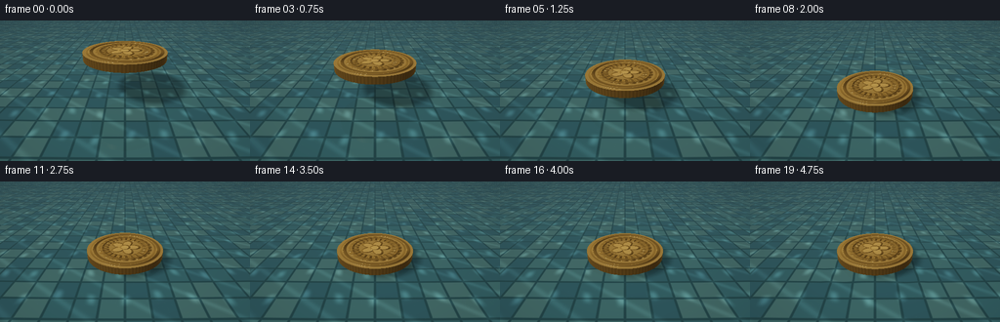
视觉工具实际返回图片 2
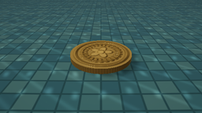
视觉工具实际返回图片 3
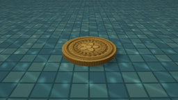
视觉工具实际返回图片 4
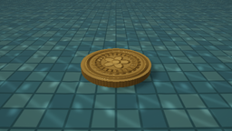
视觉工具实际返回图片 5

视觉工具实际返回图片 6
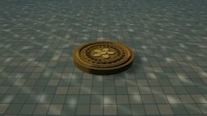
视觉工具实际返回图片 7

视觉工具实际返回图片 8
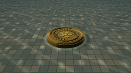
视觉工具实际返回图片 9
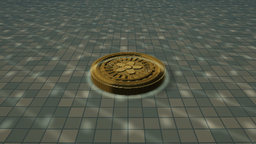
视觉工具实际返回图片 10
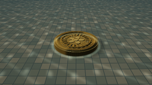
视觉工具实际返回图片 11
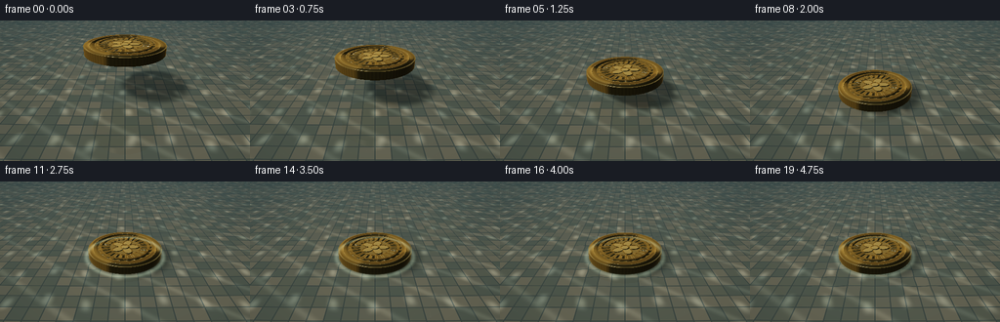
保存候选 5 份；完成命令 18 次；可验证图片返回 11 张。原始 API 响应与完整日志保留在本地。